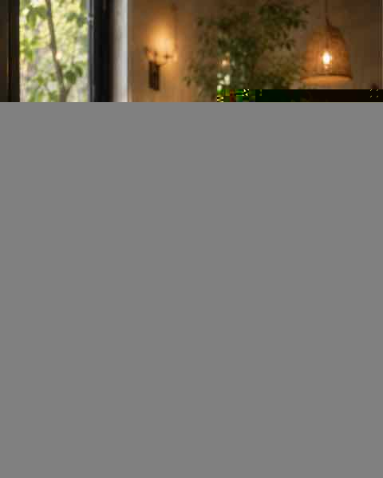

CONCEPT
鎌倉散策の途中に、
ほっと一息つける場所
焼き菓子とお茶、そしてお酒を
楽しめる小さなお店です。
観光地の賑わいから少し離れて、
静かな時間をお過ごしください。
Detour kamakura で
過ごす理由
01
静かに過ごせる路地裏の空間
駅から少し歩いた先にある、落ち着いた雰囲気のお店です。鎌倉散策の途中に、ひと息つきたい時にも立ち寄りやすい場所です。
02
焼き菓子と飲み物を楽しめる
お菓子とお茶、お酒を楽しめる焼き菓子のお店です。甘いものと一緒に、ゆっくりした時間を過ごせます。
03
店内でも持ち帰りでも
イートインとテイクアウトに対応しています。店内で過ごす日も、焼き菓子を持ち帰る日も、気分に合わせてご利用いただけます。
ATMOSPHERE
静かに流れる、
鎌倉の時間

落ち着いた店内で、お菓子と飲み物を楽しみながらゆっくり過ごせます。少人数での会話や、散策の合間の休憩にも合う雰囲気です。
SWEETS & DRINK
焼き菓子とお飲み物

焼き菓子を中心に、お茶やお酒と一緒に楽しめるお店です。メニューや価格は時期により変わることがあります。最新の情報はInstagramまたはお店へご確認ください。
こんな過ごし方に
ひとりの時間に
静かにお茶とお菓子を
少人数の会話に
落ち着いて話せる席で
散策の合間に
鎌倉歩きのひと休みに
お持ち帰りに
焼き菓子をテイクアウト
初めての方へ
お店は鎌倉駅から徒歩6〜7分、路地の奥にあります。火曜日・水曜日は定休日です。営業状況やメニューが気になる方は、来店前にInstagramやお電話での確認がおすすめです。
・路地の奥にある小さなお店です
・定休日は火曜日・水曜日です
・最新の営業日はInstagramでご確認いただけます
INFORMATION
店舗情報
- 店名
- Detour kamakura
- 業種
- カフェ・喫茶／焼き菓子
- 住所
- 〒248-0012
神奈川県鎌倉市御成町20-12 - 営業時間
- 木曜日〜月曜日 11:30〜17:30
- 定休日
- 火曜日・水曜日
- 電話番号
- 090-3909-0321
- ご利用
- イートイン／テイクアウト
- SNS
今日の寄り道に、
焼き菓子を。
営業日や最新メニューをご確認のうえ、
鎌倉散策の途中にお立ち寄りください。